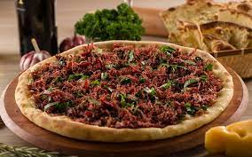
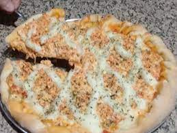
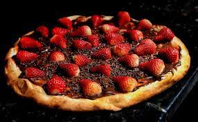
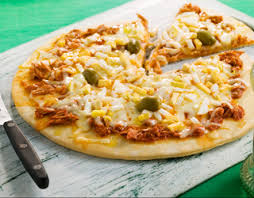

Sobre Nós

Somos uma pizzaria que faz pizza slk massa mt boa e crocante pai n tem cabelo kkkkk
Pitizas
Quatro Queijos

Charque

Frango Com Catupiry

Portuguesa

Brigadeiro

Atum
Quatro Queijos
Charque
Frango Com Catupiry
Portuguesa
Brigadeiro
Atum
Pizza de atum
Pizza de brigadeiro
Misture os ingredientes e sove bem a massa. Cubra e deixe crescer por 30 minutos. Divida a massa em 4 porções e abra-as com o rolo em superfície enfarinhada do tamanho de um prato de sobremesa. Disponha em assadeira e leve ao forno médio preaquecido (200 ºC) por cerca de 15 minutos ou até dourarem. Espalhe 2 colheres (sopa) do creme de chocolate sobre cada pizza ainda quente, distribua as fatias de morango e polvilhe granulado. Sirva com 1 bola de sorvete de creme.
Pizza de charque
Deixe a charque de molho por umas 4 horas para tirar o sal. Troque a água de vez em quando. Cozinhe a charque na panela de pressão por cerca de 40 minutos. Desfie e refogue com cebola, margarina e azeite e reserve. Cubra cada uma das massas com o molho de tomate, charque refogada e mussarela ralada. Finalize decorando a pizza com o catupiry. Asse em forno pré-aquecido (180ºC) por cerca de 20 minutos.
Pizza de frango com catupiry
Cozinhe o peito de frango na água com sal. Quando estiver pronto, retire, desfie e tempere com sal, pimenta, salsinha picadinha à gosto Espalhe o molho de tomate na massa cobrindo todo o disco Espalhe o frango desfiado pela pizza Coloque o catupiry em um saco de confeiteiro ou um saco plástico com furo na ponta. Espalhe o queijo pela pizza no formato que desejar, seja espiral ou em linhas horizontais e verticais.
Pizza portuguesa
Despeje sobre a massa um pouco de molho de tomate, cubra com queijo e presunto. Em seguida, coloque as fatias de tomate, o ovo picado e a cebola. Decore com azeitonas, tempere com orégano e tempero verde e leve ao forno preaquecido por 20 minutos (180ºC) ou até a massa ficar assada.
Pizza quatro queijos
Recheie a pizza, passando o molho de tomate em torno do disco Adicione o provolone ralado, a mussarela ralada e o gorgonzola em pedaços. Salpique o parmesão ralado por último para gratinar. Coloque o orégano e leve para assar em forno preaquecido a 200 graus, por 20 minutos ou até que o queijo borbulhe e a massa esteja dourada por baixo. Sirva imediatamente.